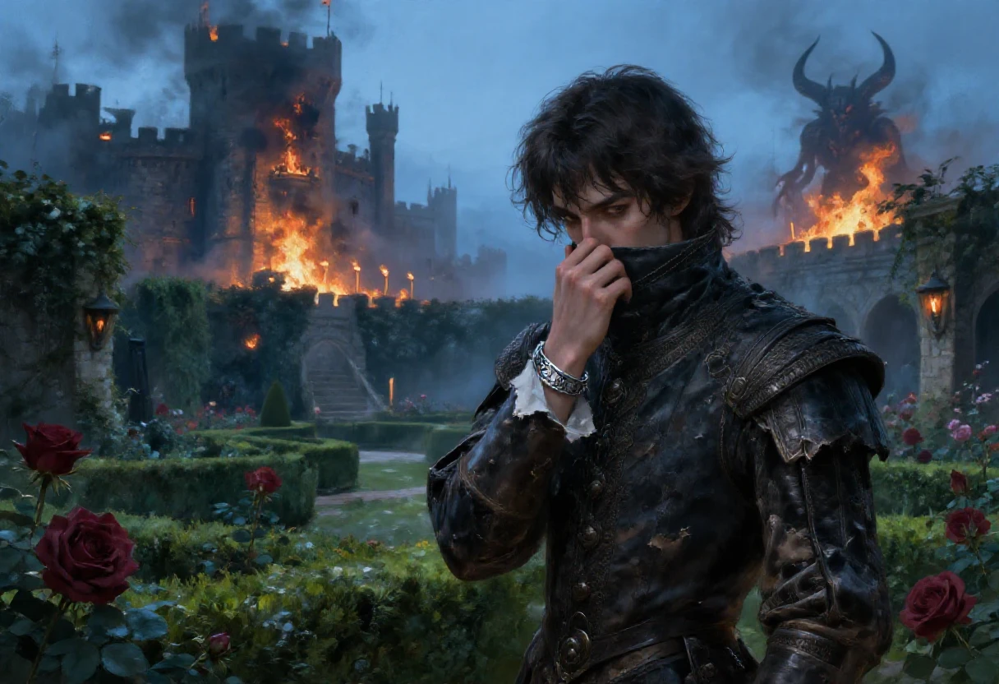
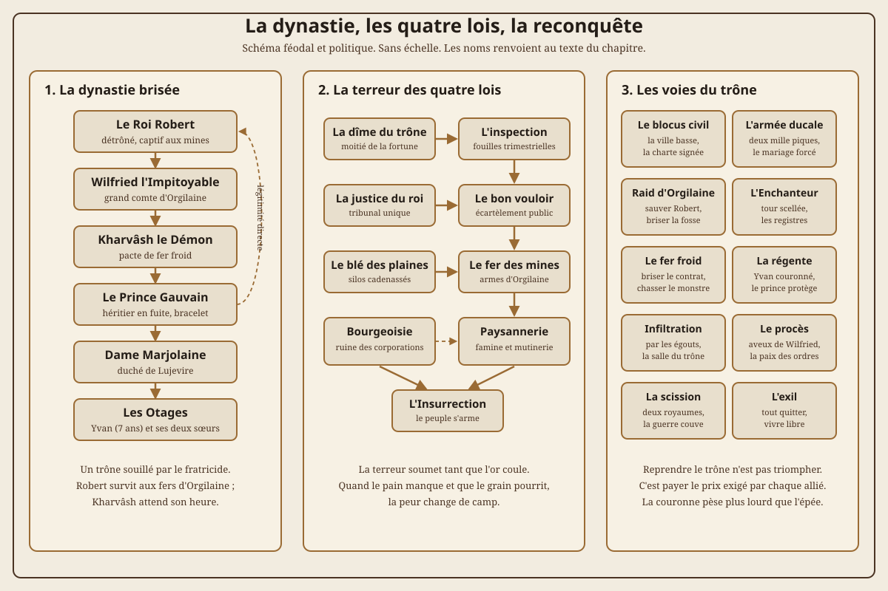

Ce chapitre ne parle pas de Samarande. Il ne parle pas de gouris, ni de voleurs, ni de Nightprowler. C'est un scénario écrit en 1999 pour un autre jeu, dans un autre royaume, avec d'autres règles, et je le publie ici parce qu'il dormait dans les mêmes archives et qu'il raconte la même chose à sa manière : un petit groupe qui découvre qu'on lui a volé sa place et qui décide d'aller la reprendre.
Je le signale dès la première ligne, et je le répéterai dans la note de source : rien de ce qui suit ne s'inscrit dans la continuité des carnets de Samarande. C'est une parenthèse, un exercice de trône et de vengeance, et le meneur qui cherche une campagne pour Nightprowler doit passer son chemin. Les valeurs chiffrées ont été laissées de côté : le fichier d'origine n'en donne presque aucune, et je préfère ne pas inventer un système qui n'existe pas.
Ce scénario est une chronique de rébellion dynastique, de terreur d'État et de sorcellerie démoniaque. Il ne s'agit ni d'un donjon ni d'une quête chevaleresque courtoise : chaque semaine sous l'usurpateur saigne le peuple, use les loyautés et renforce l'emprise du monstre. Le meneur doit tenir fermement les horloges de pression, les rancunes des provinces et la duplicité des grands.
| Rubrique | Valeurs |
|---|---|
| Titre | La reconquête du trône des Rodallois des terres d'Alliphance. |
| Source | Deux fichiers d'archives de 1999, dernière révision de travail le 1er mars 2004. |
| Type | Chronique médiévale sombre de fuite, d'organisation clandestine, de diplomatie féodale et de coup d'État. |
| Meneur | Un seul. Il doit incarner la tyrannie implacable de Wilfried, la cupidité de la cour de Lujevire et l'horreur muette du démon. |
| Joueurs | Trois à cinq, plus le meneur. Idéalement : le prince héritier, un champion d'armes loyaliste, un lettré ou érudit de cour, un diplomate ou négociateur bourgeois, et un éclaireur ou contrebandier des marais. |
| Système | Agnostique ou adapté à Nightprowler sans la magie des voleurs, ou tout moteur de dark fantasy médiévale à létalité élevée. |
| Durée | Une campagne ramassée de six à huit séances de trois heures, ou un one-shot condensé de quatre heures axé sur la fuite et l'infiltration. |
| Cadre | Le royaume d'Alliphance, la capitale fortifiée, les forêts marécageuses, les terres minières d'Orgilaine et les hautes terres Grivoises de Lujevire. |
| Ton | Froid, politique, boueux, sanglant. La peur est physique, l'or manque vite, et la vengeance coûte plus cher que la soumission. |
| Avertissements | Régicide, mutilations, torture publique, démonologie, captivité d'enfant, guerre civile, exécutions sommaires. |
| Sécurité | Contrat de table préalable, voiles sur les sévices physiques, signal d'arrêt sans justification, gestion des sujets sensibles autour des otages. |
| Matériel | Carte des trois provinces, schéma des factions et du pacte, fiches des PNJ, un compteur de dettes politiques, cinq compteurs d'horloges. |
| Ce que ce n'est pas | Pas un conte arthurien héroïque, pas une croisade morale sans compromis. Pour monter sur le trône, le prince devra s'endetter auprès de monstres humains ou démoniaques. |
La dynastie des Rodallois règne sur les terres d'Alliphance depuis plus de quatre cents ans. À force de mariages, de partages et de querelles, la famille s'est divisée en trois branches. Il y a trente ans, le dernier roi unique, Gilbert de Todallois, est mort en laissant deux fils et une fille. L'aîné, Robert, a reçu presque les trois quarts du royaume. Le cadet, Wilfried, dit l'Impitoyable, a été nommé grand comte des terres Orgilaine, sur le quart restant. La fille, dame Marjolaine, a épousé le grand duc de Lujevire, maître des hautes terres Grivoises.
Depuis le partage, la prospérité semblait régner. Robert s'est marié à dix-neuf ans avec la fille d'un petit bourgeois, et il mène depuis une vie heureuse. Son épouse lui a donné deux filles, puis le fils tant attendu. Wilfried, lui, ne s'est jamais marié et ne se mariera probablement jamais. Les rumeurs courent sur son compte : on dit qu'il est incapable du moindre amour, et les rumeurs ont souvent raison.
Le royaume tient sur trois choses : le blé des plaines, le fer des montagnes et la fidélité des bourgeois. Robert avait l'amitié des bourgeois. Wilfried a les deux autres, et il a décidé de prendre la première par la peur.
Le drame survient le cinquième jour du mois de Mortefeuil. Au matin, on trouve le château royal vide et tous ses habitants massacrés, pour ne pas dire atrocement mutilés. Deux corps manquent : celui du roi Robert et celui de son jeune fils, Yvan. Le royaume s'affole en deux jours. L'arrivée du comte et de sa garde personnelle à Alliphance ne se fait guère attendre. Wilfried s'installe au château et prononce un discours devant la population venue s'enquérir des dispositions à prendre.
Il commence par rappeler le malheur qui a frappé son frère. Il enchaîne sur les lourdes responsabilités qui lui reviennent de droit, en tant que digne successeur. Il se déclare roi des terres d'Alliphance et de celles d'Orgilaine. Puis il énonce quatre lois. Un paysan lève la main pour objecter. Wilfried fait signe à deux gardes, on assomme l'homme, et la garde fait place devant le château. Le malheureux est écartelé par quatre gardes sur leurs chevaux, sur ordre du nouveau roi. Le règne de la souffrance commence sur ce hurlement.
| Loi | Texte | Ce que cela change en jeu |
|---|---|---|
| La dîme du trône | À chaque fin de mois, chaque sujet doit remettre au poste de garde royal la moitié de sa fortune et un dixième de ses récoltes s'il est cultivateur. | Les bourgeois s'appauvrissent, les paysans cachent leur grain, et les personnages doivent choisir entre payer, mentir ou fuir. Chaque mois qui passe est une horloge. |
| L'inspection | Une troupe de gardes passe tous les deux ou trois mois vérifier l'étendue réelle des richesses. Les fautifs sont emprisonnés au château jusqu'à ce que mort s'ensuive, ou réduits à l'asservissement total. | Une scène de perquisition par visite, et une raison de creuser des cachettes, de corrompre un garde ou de déplacer les biens la nuit. |
| La justice du roi | Le roi se constitue seul juge en cas de litige, quel qu'il soit. | Les procès disparaissent. Un personnage qui cherche justice doit obtenir une audience, et une audience est une scène, pas un jet de dés. |
| Le bon vouloir | Toute contestation d'un ordre ou d'une loi royale est sanctionnée selon le bon vouloir du roi. | La punition n'est pas une règle, c'est une humeur. Le meneur peut frapper à chaque fois qu'un joueur parle trop fort, et c'est précisément le but. |
Vous êtes le fils de Robert. Vous avez eu de la chance, il y a trois jours, le soir du massacre : vous n'étiez pas dans le château. Vous étiez dans le jardin royal, à une heure tardive, avec votre dame de chambre favorite. Votre oncle est entré dans le château d'une manière sanglante et néanmoins discrète, et vous n'avez pas été remarqué.
Elle, en revanche, n'a pas eu votre chance. Elle a paniqué, elle a tenté de s'enfuir, et elle a fini décapitée par un étrange monstre cornu, quatre fois plus grand que vous. Le monstre accompagnait votre oncle. Il ne semblait pas aimer les ordres, mais il les suivait. Un magicien, peut-être. Un praticien de magie noire, plus probablement.
Le corps de l'enchanteur personnel de votre père n'a jamais été retrouvé. Vous vous demandez où il a bien pu passer. Vous avez un bracelet frappé des initiales de votre famille, et c'est tout ce qui vous reste. Le montrer à votre oncle ne le fera pas céder la place, mais on ne sait jamais.
Le personnage joueur est donc un prince sans cour, sans armée et sans preuve. Il a un nom, un bracelet, une dette envers la mémoire d'une jeune femme, et une tante mariée à un duc qui ne l'aime probablement pas assez pour lever une armée. C'est peu. C'est le point de départ.
Le fichier de 1999 s'arrête sur la situation, sans expliquer le complot. Je propose une vérité, et le meneur en fait ce qu'il veut.
Wilfried a passé un pacte. Le monstre cornu est un démon de rang inférieur, lié par un contrat qui l'oblige à obéir sans comprendre, et qui supporte de moins en moins les ordres. Le prix du pacte n'est pas l'âme de Wilfried, trop précieuse à ses yeux : c'est le corps de son frère. Robert n'est pas mort au château. Il a été livré, vivant, à quelque chose qui vit sous les terres Orgilaine, et il sert de réserve, de monnaie ou de porte. Le jeune Yvan a été caché, pas tué : un enfant royal vivant vaut une rançon, un otage ou une légitimité de rechange.
L'enchanteur de la cour a compris le pacte avant tout le monde. Il a tenté de prévenir Robert, il est arrivé trop tard, et il a été enfermé dans une tour du château avec les registres du royaume. Il connaît le nom du démon, la clause du contrat et le moyen de le briser. C'est le témoin que les personnages doivent trouver, et il est gardé par ceux qui ont intérêt à ce qu'il se taise.
Trois vérités possibles, au choix du meneur : Wilfried est un traître qui a vendu son frère, Wilfried est un imbécile manipulé par le démon, ou Wilfried est déjà mort et le démon porte son visage. La troisième est la plus dure, la première est la plus politique, la deuxième est la plus tragique.
Le démon cornu a un nom que nul n'ose prononcer devant les troupes : Kharvâsh, l'Équarrisseur des lignées. Ce n'est pas une créature sauvage surgie des enfers pour ravager la terre, mais un intendant de sang. Le contrat qui le lie à Wilfried est gravé sur une lame de fer froid conservée dans la tour de l'enchanteur. Pour chaque jour où Wilfried règne sans conteste sur le trône d'Alliphance, Kharvâsh réclame une livre de chair noble ou dix âmes plébéiennes. Robert est son gage : tant que le vieux roi respire dans la fosse d'Orgilaine, le lien subsiste. Si Robert meurt, le contrat bascule sur Wilfried lui-même. C'est pourquoi Wilfried le maintient en vie au milieu des fers et du soufre, à la frontière exacte entre la douleur et le trépas.
Pour orchestrer la campagne sans la figer dans un carcan rigide, le meneur tient cinq horloges modulaires. Deux sont publiques, visibles sur la table de jeu (l'emprise de Wilfried, la révolte des bourgeois) ; trois restent derrière l'écran (la faim du démon, l'agonie de Robert, l'intervention de Lujevire). Ces horloges n'avancent pas au gré des heures de jeu, mais à chaque décision lourde, échec critique ou compromis politique consenti par les personnages.
| Horloge | Segments | Ce qui la fait progresser | Au dernier segment |
|---|---|---|---|
| L'emprise de Wilfried | 6 | Chaque mois de dîme perçu, chaque rébellion matée, chaque fortification achevée, chaque potence dressée. | Le royaume est verrouillé. Une conscription générale arme cinq cents cavaliers noirs. Toute dissidence passive devient passible de mort immédiate. |
| La faim du Démon | 6 | Chaque nuit de lune noire, chaque hésitation de Wilfried, chaque invocation de renforts, chaque sang versé sans rituel. | Kharvâsh brise une clause de retenue. Il chasse ouvertement dans les rues d'Alliphance la nuit et exige le sacrifice public du jeune Yvan. |
| L'agonie de Robert | 4 | Chaque quinzaine écoulée, chaque tentative d'évasion manquée aux mines, chaque torture ordonnée pour lui faire signer une abdication. | Robert succombe à ses blessures dans la fosse d'Orgilaine. Le pacte de Wilfried s'effondre dans le sang, et Kharvâsh vient réclamer l'usurpateur. |
| La révolte des Bourgeois | 4 | Chaque perquisition brutale, chaque hangar brûlé par la garde, chaque contact réussi avec le prince, chaque saisie d'or. | Les bourgeois ferment les portes de la ville basse, hissent la bannière blanche des Todallois et arment les corporations. C'est l'insurrection ouverte. |
| L'intervention de Lujevire | 6 | Chaque émissaire envoyé, chaque concession territoriale promise, chaque refus du prince d'épouser sa cousine, chaque mois de guerre. | Le grand duc franchit les cols avec deux mille piquiers grivois. Il vient non pour libérer Alliphance, mais pour en faire un protectorat vassal. |
Le meneur doit faire peser ces horloges sur chaque négociation. Les joueurs ne luttent pas seulement contre une garnison de soudards : ils courent contre la mort d'un père captif, contre l'avidité calculatrice d'un oncle ducal et contre la patience d'une entité qui dévore un royaume un quartier après l'autre.
Le royaume des Rodallois n'est pas une étendue uniforme de châteaux de cartes. C'est une contrée rude, découpée par des siècles d'alliances et de déchirements féodaux en trois entités distinctes : le cœur nourricier d'Alliphance avec ses plaines de blé et ses riches corporations marchandes ; les rudes terres d'Orgilaine à l'est, hérissées de forges, de terrils et de mines de fer où règne le fief personnel de Wilfried ; et les hautes terres Grivoises au nord-ouest, dominées par le duché de Lujevire, pays de brume, d'élevages caprins et de forteresses austères perchées sur des pitons rocheux.
| Lieu | Description et atmosphère | Intérêt dramatique et tactique |
|---|---|---|
| Le château d'Alliphance | Haute citadelle de granit blanc aux toits d'ardoise bleue, ceinte d'un double fossé asséché et de quatre tours rondes. | Le cœur du pouvoir usurpé. Wilfried y tient sa cour entouré de cinquante gardes d'Orgilaine et de Kharvâsh, tapi dans l'ancienne salle capitulaire. |
| La cour de l'Écartèlement | Vaste esplanade d'armes pavée de grès, devant le pont-levis royal, où trônent les quatre anneaux scellés dans la roche. | Lieu du premier supplice public. La population y est convoquée pour chaque proclamation ; la foule y est dense, frémissante, prompte à l'émeute. |
| Le faubourg des Tanneurs | Quartier populaire de la ville basse, bordé par les eaux grasses de la Vévre, encombré de cuves d'acide et d'odeurs de suif. | Premier refuge des fugitifs. Les ruelles étroites et les passerelles de bois empêchent la cavalerie de manœuvrer. Cachette idéale pour le prince. |
| La place du Grand Marché | Halle couverte de chêne où les corporations d'Alliphance négociaient jadis les grains et les draps de laine. | Centre de la dîme du trône. Les percepteurs de Wilfried y dressent leurs balances de fer sous la garde d'arbalétriers postés aux galeries. |
| Le jardin royal des Murmures | Parc d'ifs taillés, de tonnelles de roses et de bassins de marbre, séparé des appartements royaux par une grille forgée. | Théâtre du massacre initial. La camériste y a été décapitée ; des taches de sang séché souillent encore les marches du pavillon d'été. |
| La tour de l'Enchanteur | Étroite tour polygonale au nord du donjon, scellée de chaînes de fer froid et de sceaux de plomb alchimique. | Maître Aldebrand y est emmuré vivant avec les registres d'Alliphance et la dague du contrat noir. Impossible d'y entrer sans les trois clés. |
| Les ponts de péage sur la Vévre | Trois ouvrages de pierre fortifiés reliant la ville haute aux grandes plaines agricoles d'Alliphance. | Postes d'inspection militaire permanente. Chaque charrette est vidée et sondée à la pique ; l'évasion par la rivière exige barques plates ou plongeons. |
| Les silos de Mortefeuil | Caves voûtées et greniers massifs bâtis au milieu des champs de blé pour stocker les réserves du royaume. | Le nerf de la guerre. Wilfried les fait cadenasser pour affamer la ville basse ; les paysans loyalistes y cachent des armes sous le grain. |
| Les marais de la Noire-Eau | Vastes marécages d'aulnes et de roseaux à dix lieues au sud de la capitale, coupés de sentiers mouvants. | Repaire des proscrits, des contrebandiers et des déserteurs. Mère Tiphaine y tient un ermitage sur pilotis inaccessible sans guide. |
| Les mines de fer d'Orgilaine | Fosses béantes et galeries d'extraction puantes de soufre, creusées dans les contreforts des montagnes de l'Est. | Le bagne d'Orgilaine. Des forçats enchaînés y forgent les armures des cavaliers noirs ; le roi Robert y agonise au fond du puits des Ombres. |
| Le bastion de Mont-Orgueil | Forteresse d'Orgilaine au sommet d'un éperon de basalte noir, dotée d'une citerne taillée à même le roc. | Place forte personnelle de Wilfried. En cas de siège à Alliphance, c'est là qu'il compte se replier avec ses trésors et ses otages. |
| Le castel ducal de Lujevire | Palais fortifié aux fenêtres à meneaux, perché sur un plateau calcaire venté des hautes terres Grivoises. | Cour de dame Marjolaine et du grand duc. Une cour polie, glaciale et méfiante, où chaque parole du prince est pesée en arpents de terre. |
Traverser le royaume n'est pas une promenade de cavaliers : les routes principales sont jalonnées de gibets et de postes d'inspection, les bacs sur la Vévre sont réquisitionnés, et la monnaie d'Alliphance perd la moitié de sa valeur dès que l'on quitte le bailliage royal. Les personnages doivent apprendre les pistes de contrebandiers, les gués oubliés et les signes de reconnaissance que les meuniers peignent sur leurs portes à la chaux vive.
La première séance commence dans le jardin, la nuit du massacre. Le joueur ne sait pas encore ce qui se passe. Il entend les cris, il voit les torches, il comprend que le château est perdu. La dame de chambre panique et meurt. Le monstre cornu apparaît, et le personnage doit fuir, pas combattre. Un prince de dix-huit ans ne tue pas un démon avec une épée de cérémonie.
La panique initiale est physique : l'odeur du sang frais sur les rosiers, le hurlement étouffé de la camériste dont la tête roule dans le bassin de marbre, et la silhouette colossale de Kharvâsh se découpant contre les vitraux embrasés de la chapelle. Le démon ne court pas : il marche avec une lenteur terrifiante, ses sabots fendant les dalles de grès, sachant que le château est cerné. Les personnages disposent de quelques minutes pour ramasser ce qui traîne (un manteau sombre, une dague de chasse, le bracelet aux armes dynastiques) et franchir la poterne basse avant que les cavaliers noirs d'Orgilaine ne bouclent le parc.
| Voie de fuite | Passage | Épreuve ou risque | Ce qu'elle coûte ou rapporte |
|---|---|---|---|
| Le conduit des cuisines | Descente par le vide-déchets menant aux égouts gras du château. | Agilité et sang-froid face à l'étroitesse et aux vapeurs fétides. | Sortie directe dans le faubourg des Tanneurs, mais les vêtements sont souillés et l'odeur trahit les fuyards. |
| La brèche du verger | Escalade du vieux mur de briques croulant au fond des jardins. | Escalade rapide avant que les archers de la tour nord ne tirent. | Fuite propre vers les faubourgs maraîchers, mais perte de la bourse royale dans les ronces. |
| Les écuries royales | Traversée des stalles en flammes pour détacher deux chevaux de selle. | Dressage et courage face aux étalons affolés et à deux gardes d'Orgilaine. | Deux montures rapides pour sortir de la ville avant l'aube, au prix d'un combat bruyant. |
| La barque du lavoir | Descente de la berge abrupte pour sauter dans le chaland des lavandières. | Discrétion et rame silencieuse sur les eaux froides de la Vévre. | Évite les patrouilles de cavalerie, mais le passeur exige le manteau de velours comme péage. |
La fuite traverse la ville basse, les jardins, une écurie, un lavoir. Le meneur peut y placer trois obstacles : une patrouille qui ne reconnaît pas encore le prince, un passeur qui demande de l'argent, et un bourgeois qui l'a vu grandir et qui hésite entre le livrer et l'aider. Ce bourgeois est le premier allié possible. Il ne croit pas au prince, il croit à la stabilité du royaume, et il aide parce qu'il a peur de Wilfried, pas par loyauté.
Au matin, le prince est hors les murs, avec son bracelet, une bourse légère et le nom d'une tante. Le royaume a déjà changé de maître.
Le cœur du scénario n'est pas la bataille finale, c'est la vie quotidienne sous la tyrannie. Les quatre lois donnent au meneur une mécanique simple : chaque mois, chaque personnage perd la moitié de sa fortune, et chaque trimestre, une inspection passe. Les joueurs doivent trouver de l'argent, le cacher, le déplacer, ou le dépenser avant qu'on ne le leur prenne. La peur fait le reste.
Le prince ne peut pas rester caché indéfiniment. Il a un visage, un nom et un bracelet. S'il se montre, il devient un symbole ; s'il se cache, il devient une rumeur. Le meneur doit jouer sur cette tension : chaque fois que le personnage aide quelqu'un, il risque d'être reconnu, et chaque fois qu'il est reconnu, il gagne un allié ou un ennemi.
| Dilemme de résistance | Situation sous les lois | Conséquence dramatique |
|---|---|---|
| Le meunier affamé | Un meunier de la Vévre cache deux sacs d'épeautre sous ses meules pour nourrir six enfants orphelins. La patrouille approche. | Si les personnages détournent l'attention des gardes, ils brûlent leur couverture. S'ils laissent fouiller, le meunier finit pendu au poteau du moulin. |
| La dîme du bourgeois | Un marchand de draps enrichi refuse de vider son coffre et propose au prince de financer sa rébellion en échange d'une franchise totale de taxes. | Accepter, c'est vendre les futures finances de la couronne avant d'avoir repris le trône. Refuser, c'est rester sans armes ni vivres pour l'hiver. |
| L'inspection au village | Le bailli de Wilfried exige qu'une famille dénonce son voisin sous peine d'écartèlement immédiat de l'aîné des fils. | Le prince peut intervenir par le fer, mais il signe le massacre du hameau par les cavaliers d'Orgilaine le lendemain matin. |
| Le faux coupable | La justice du roi condamne un forgeron innocent accusé d'avoir fabriqué des pointes de flèches pour le prince légitime. | Le prince assiste au simulacre de procès. Se lever, c'est se livrer ; se taire, c'est laisser mourir un homme en son nom. |
| Le convoi de prisonniers | Vingt compagnons d'armes du roi Robert sont emmenés enchaînés vers les fosses d'Orgilaine sous la garde de dix arbalétriers. | Une embuscade est possible au défilé des Roches, mais elle rameute toute la garnison du comte dans la province. |
| La dénonciation anonyme | Une servante reconnaît la bague du prince à l'auberge et prépare un message pour la garnison afin d'obtenir la prime promise. | La corrompre avec le dernier bijou royal, la menacer de mort, ou fuir immédiatement dans la nuit sous la pluie battante. |
Trois scènes suffisent pour installer le règne. Un village qui cache son grain et qu'on punit. Un procès expédié par le roi, où le personnage ne peut rien dire sans se trahir. Une inspection qui tourne mal, et un garde qui laisse passer un vieil homme parce qu'il le connaît. Ces scènes ne sont pas des combats. Ce sont des choix.
La tragédie d'Alliphance se joue entre des hommes et des femmes aux intérêts inconciliables. Aucun n'est entièrement pur, aucun n'est un simple pion sans volonté. Le meneur doit donner à chaque interlocuteur une voix, une rancœur ancienne et un prix précis pour son ralliement ou sa neutralité.
| Figure | Rôle et allégeance | Désir secret et ambition | Faiblesse ou vulnérabilité |
|---|---|---|---|
| Gauvain de Todallois | Le prince héritier en fuite, 18 ans, armé de son seul bracelet armorié. | Venger son père, reprendre le trône et laver la honte de sa fuite initiale. | Inexpérience politique, sentimentalisme, dépendance absolue envers ses alliés. |
| Wilfried l'Impitoyable | Grand comte d'Orgilaine, usurpateur du trône d'Alliphance, frère cadet de Robert. | Consolider son pouvoir absolu et forcer la noblesse à reconnaître sa suprématie. | Terreur panique de la rupture du pacte, méfiance maladive envers ses propres capitaines. |
| Kharvâsh l'Équarrisseur | Démon cornu lié par le contrat noir, tapi dans la citadelle d'Alliphance. | Rompre les entraves de fer froid qui le soumettent aux caprices mortels et festoyer sur la lignée royale. | Lié par les termes stricts du parchemin scellé ; sensible au sel d'argent et aux armes bénies. |
| Dame Marjolaine | Sœur de Robert et Wilfried, grande duchesse des hautes terres Grivoises de Lujevire. | Placer sa propre fille sur le trône d'Alliphance par un mariage forcé avec le prince restauré. | Cupidité féodale, orgueil dynastique, crainte de voir la guerre civile déborder sur ses terres. |
| Le Grand Duc de Lujevire | Époux de Marjolaine, maître de deux mille piquiers et de trésors accumulés. | Annexer les riches plaines céréalières d'Alliphance sous couvert de tutelle militaire. | Prudence excessive frôlant la lâcheté politique ; il ne bougera pas sans garantie d'une victoire facile. |
| Maître Aldebrand | Enchanteur de la cour royale, emmuré dans sa tour scellée. | Faire détruire la lame du contrat noir et réparer sa faute d'avoir sous-estimé Wilfried. | Âgé, affaibli par le jeûne, sans composants magiques tant qu'il demeure enfermé. |
| Le jeune Yvan | Fils cadet de Robert, 7 ans, détenu secret dans une cellule du donjon. | Retrouver son grand frère et sa mère, fuir les bruits de sabots ferrés qui hantent ses nuits. | Terreur enfantine, santé fragile, otage vulnérable au moindre chantage de Wilfried. |
| Dame Éléonore | Fille aînée de Robert, 20 ans, recluse au couvent des Dames Grises sous bonne garde. | Préserver les droits de son lignage et coordonner la résistance des couvents et des abbayes. | Surveillée nuit et jour par les espions d'Orgilaine ; risque d'être mariée de force à un soudard. |
| Sire Gauthier de Mortemer | Capitaine de la garde royale d'Alliphance, contraint de servir Wilfried. | Sauver l'honneur de sa compagnie sans faire massacrer ses hommes par les mercenaires d'Orgilaine. | Déchiré entre son serment de vassalité au trône et son dégoût pour les exécutions sommaires. |
| Prévôt Vandermeer | Doyen de la corporation des drapiers et porte-parole des grands bourgeois de la capitale. | Sauvegarder les fortunes marchandes, abolir la dîme du trône et obtenir une charte communale. | Peureux dès qu'une dague est tirée ; prêt à trahir le prince si Wilfried propose un compromis commercial. |
| Mère Tiphaine | Herboriste des marais de la Noire-Eau, ancienne guérisseuse du roi Robert. | Protéger les réfugiés et les blessés de la forêt contre les battues de cavalerie. | Isolée, sans armes, traquée par les chiens de meute de la garnison. |
| Le Passeur borgne | Contrebandier du fleuve Vévre, ancien bagnard d'Orgilaine. | Amasser assez d'or pour acheter une seigneurie lointaine et fuir le royaume. | Véniel, cynique, il vendra l'emplacement du camp royaliste au plus offrant si on ne le surveille pas. |
| Frère Anselme | Chapelain de la chapelle royale, prêtre servile mais terrorisé. | Éviter le bûcher et maintenir le culte ouvert malgré la présence abominable de Kharvâsh. | Superstitieux, faible, il sait où sont cachées les archives secrètes du confesseur de Robert. |
| Corvus l'Ombre | Maître espion d'Orgilaine au service exclusif de Wilfried. | Découvrir où se cache le prince pour toucher le domaine promis en récompense. | Cruel, arrogant, méprisé par les capitaines d'armes de la garde régulière. |
Le royaume d'Alliphance se fissure le long de lignes d'intérêts économiques et féodaux. Le prince ne pourra pas rallier toutes les factions : choisir les bourgeois, c'est aliéner une partie de la noblesse d'épée ; s'appuyer sur les piquiers de Lujevire, c'est risquer de devenir le vassal de son oncle. Le tableau ci-dessous détaille les forces en présence, leurs objectifs et ce qu'elles exigent avant de lever le petit doigt.
| Faction | Effectifs et moyens | Objectif prioritaire | Attitude envers le prince | Prix de l'alliance |
|---|---|---|---|---|
| Les Loyalistes Todallois | Une cinquantaine de chevaliers dépossédés, archers et serviteurs fidèles dispersés. | Rétablir l'héritier légitime sur le trône et venger le massacre de Mortefeuil. | Dévoués corps et âme, mais exigeants sur la noblesse des méthodes employées. | La fidélité de sang. Ils attendent du prince qu'il se comporte en roi valeureux, pas en fuyard lâche. |
| La Garde d'Orgilaine | Deux cents cavaliers noirs caparaçonnés de fer, arbalétriers aguerris, soudards impitoyables. | Maintenir la terreur, percevoir les impôts et écraser tout foyer de sédition. | Hostiles, traquent le prince à vue sous promesse d'une immense prime. | Incorruptibles en bloc, mais les sergents subalternes peuvent être isolés ou semés. |
| Les Bourgeois d'Alliphance | Les corporations de marchands, drapiers, orfèvres et tanneurs de la ville basse. | Faire cesser la confiscation mensuelle de leurs biens et préserver leurs marchés. | Prudents, sympathisants secrets mais terrifiés par les représailles de Wilfried. | Une charte de franchises communales signée de la main du prince et l'exemption de taxes royales. |
| La Paysannerie des plaines | Des milliers de serfs, laboureurs et meuniers pressurés jusqu'à la famine. | Sauver leurs récoltes, cacher leurs enfants à la conscription et ne pas être pendus. | Voient le prince comme un seigneur comme un autre, indifférent à leur misère passée. | Un geste concret : ouvrir les silos royaux, exécuter un collecteur d'impôt sadique, ou sauver une récolte. |
| La Cour de Lujevire | Deux mille piquiers de métier, cavalerie légère de montagne, trésor ducal intact. | Élargir leur influence, affaiblir Alliphance et marier leur lignée au trône royal. | Alliés théoriques de sang, prédateurs politiques froids en réalité. | Le mariage forcé du prince avec dame Yolande de Lujevire et la cession des péages du Nord. |
| Le Clergé d'Alliphance | Prêtres paroissiaux, chanoines et moines des abbayes de la province. | Chasser l'abomination démoniaque du château et purifier la terre sanctifiée. | Déchirés entre la soumission à l'ordre établi et l'horreur des rituels nocturnes. | La promesse solennelle de rétablir les dîmes d'église et de brûler publiquement les écrits d'Aldebrand. |
| Les Proscrits de la Noire-Eau | Soixante braconniers, contrebandiers, déserteurs et bannis armés d'arcs courts et de pieux. | Survivre dans la fange, piller les convois royaux isolés et éviter les battues. | Méfiance instinctive envers toute couronne, respect pour la force et l'or. | Une amnistie générale scellée après la victoire et le droit coutumier de chasse dans les marais. |
| Le Cercle de fer de Wilfried | Une douzaine de barons d'Orgilaine complices du régicide et le démon Kharvâsh. | Garder les terres confisquées aux fidèles de Robert et perpétuer le règne de fer. | Ennemis mortels sans reddition possible. Ils savent qu'un procès royal signifierait leur mort. | Aucune négociation. Seule la mort de Wilfried ou la rupture du contrat peut briser leur cercle. |
Les relations entre ces groupes forment un échiquier où chaque pièce avancée en découvre une autre. Wilfried tient la bourgeoisie par la peur des inspections, mais la bourgeoisie finance secrètement les proscrits des marais pour attaquer les convois de blé d'Orgilaine. Dame Marjolaine méprise les bourgeois et craint la paysannerie en armes, mais elle ne marchera pas sans l'assurance que les corporations ouvriront les portes de la ville basse à ses troupes. Le meneur doit mettre ces contradictions en scène lors de chaque entrevue diplomatique.
| Relation féodale | Nature du lien | Moyen de subversion | Effet sur la campagne |
|---|---|---|---|
| Wilfried et ses barons | Pacte de sang et partage des dépouilles des Todallois. | Révéler que Wilfried compte les sacrifier à Kharvâsh pour payer son sursis personnel. | Défiance au sein de la garnison, officiers qui hésitent à charger, portes laissées entrouvertes. |
| Gauthier et Wilfried | Serment d'obéissance militaire contraint sous la menace d'exécution des gardes. | Lui apporter la preuve formelle que Robert a été livré vivant aux mines et non tué au combat. | La garde royale d'Alliphance refuse de tirer sur le prince et enferme les cavaliers d'Orgilaine. |
| Marjolaine et son époux | Complicité dynastique mais rivalité d'autorité sur l'armée de Lujevire. | Flatter l'ambition personnelle du duc en lui promettant un rôle de connétable du royaume. | Le duc envoie ses troupes sans exiger immédiatement la signature du contrat de mariage. |
| Vandermeer et la rébellion | Financement sous le manteau contre promesse de privilèges fiscaux. | Démontrer que la dîme du trône finira par ruiner totalement les corporations avant six mois. | Les bourgeois livrent les plans des galeries souterraines reliant la ville basse aux caves du château. |
| Les paysans et le prince | Méfiance séculaire envers l'aristocratie qui prélève le grain. | Défendre en personne un village contre un collecteur de dîme et refuser tout tribut. | Soulèvement rural spontané : les routes sont coupées, les estafettes de Wilfried interceptées. |
| Aldebrand et Kharvâsh | Savoir magique contre férocité démoniaque. | Délivrer Aldebrand de sa tour pour qu'il prononce le contre-rituel de rupture du fer froid. | Kharvâsh se retourne contre son maître dans la salle du trône et s'évanouit dans les ombres. |
Le prince a trois sources d'appui, et aucune ne suffit seule.
| Allié | Ce qu'il veut | Ce qu'il coûte |
|---|---|---|
| Dame Marjolaine | La légitimité de son neveu, la chute de Wilfried, et la sécurité des hautes terres Grivoises. | Elle exige une place au conseil et le mariage du prince avec une de ses filles. Elle ne lèvera pas une armée pour un garçon qu'elle n'a pas vu depuis dix ans. |
| Les bourgeois d'Alliphance | La fin des prélèvements et la reprise du commerce. | Ils veulent des garanties écrites, une charte, et le droit de juger leurs propres affaires. Le prince devra renoncer à une part de son pouvoir avant de l'avoir repris. |
| Les paysans | Manger, semer, ne pas être écartelés. | Ils ne s'engagent pas pour un seigneur, même légitime. Il faut un miracle, une récolte sauvée ou un démon tué devant eux. |
| L'enchanteur | Sortir de sa tour et laver sa réputation. | Il connaît le prix du pacte, et il ne le dira pas au prince avant d'avoir la preuve que le prince peut gagner. |
| Le monstre cornu | Rien. Il obéit, et il déteste obéir. | Une clause du contrat peut le retourner. Il faut la trouver, et il faut accepter de négocier avec ce qui a tué la dame de chambre. |
Le meneur peut ajouter une quatrième source : les filles de Robert, sœurs du prince, dont on ne parle pas dans le fichier d'origine. Leur sort est une énigme, et une sœur cachée vaut mieux qu'un trésor. Si le meneur préfère une campagne plus simple, il les laisse hors jeu, mariées ou enfermées dans un couvent.
Pour reprendre le trône, il ne suffit pas de tuer Wilfried. Il faut prouver. Le bracelet est une preuve d'identité, pas une preuve de crime. Les registres du château, tenus par l'enchanteur, portent les mouvements de troupes, les livraisons, et le nom de ceux qui ont ouvert les portes la nuit du massacre. Le corps de Robert, s'il est retrouvé, prouve que le roi ne peut pas être mort au château. Yvan, s'il est vivant, prouve que la ligne directe continue.
La quête des preuves oblige les personnages à s'infiltrer dans les lieux les plus dangereux du royaume. Les rumeurs ne suffisent pas à convaincre le grand duc de Lujevire ni les prud'hommes de la ville basse : des barons d'épée ne risquent pas leur tête sur la parole d'un prince errant vêtu de bure. Il faut des sceaux, du parchemin certifié, des témoins de sang et des aveux écrits.
| Preuve | Emplacement | Obstacle ou gardien | Poids politique |
|---|---|---|---|
| Le grand livre de chancellerie | La tour d'Aldebrand, sous une dalle plombée. | Chaînes scellées, runes de garde et deux sentinelles d'Orgilaine. | Prouve le paiement de mercenaires étrangers avant le massacre et l'achat de fer froid par Wilfried. |
| Le roi Robert captif | Le fond de la fosse des Ombres, aux mines d'Orgilaine. | Quarante forçats, dix gardes de chiourme et un contremaître borgne. | Témoin vivant du régicide manqué. Sa parole pulvérise la légitimité royale autoproclamée de Wilfried. |
| Le petit prince Yvan | Une chambre basse du donjon royal, gardée par le chapelain Anselme. | Frère Anselme, porte verrouillée à double tour, rondes régulières. | Empêche Wilfried d'utiliser l'enfant comme bouclier ou de simuler un testament d'adoption royale. |
| La lame du pacte noir | Le reliquaire de fer froid suspendu au cou de Kharvâsh. | Le démon cornu lui-même, rôdant dans la grande salle du trône. | Preuve irréfutable de sorcellerie sacrilège devant l'Église et instrument de rupture du monstre. |
| Le témoignage de Gauthier | Le quartier des gardes de la citadelle d'Alliphance. | La peur de Gauthier pour la vie de ses hommes et sa méfiance. | Rallie la totalité de la garde régulière d'Alliphance d'un seul mot d'ordre à la caserne. |
| La correspondance de Lujevire | Une cassette de cuir dans les appartements privés du comte. | Serrure piégée à l'aiguille empoisonnée, gardes du corps personnels. | Révèle le double jeu de Marjolaine et permet au prince de neutraliser le chantage matrimonial de sa tante. |
La preuve la plus forte est le monstre. Un démon cornu dans les écuries du roi, voilà de quoi retourner une ville. Mais le monstre ne se laisse pas capturer, et il ne parle pas. Il faut le contrat, et le contrat est dans la tour, et la tour est gardée.
Le démon cornu n'est pas un figurant de foire. Haut de près de quatre mètres, la peau semblable à du cuir d'hippopotame durci au feu, doté de deux cornes torsadées recourbées vers l'arrière et de sabots fourchus fendant la pierre, Kharvâsh dégage une puanteur de graisse rance et de suie froide. Il ne manie aucune épée : ses bras noueux se terminent par des griffes d'airain capables d'éventrer un cheval caparaçonné d'un seul revers. Le silence qui l'entoure est contre nature : les chiens hurlent à la mort à un quart de lieue, les lampes à huile baissent d'intensité lorsqu'il approche, et les miroirs se fendent sous son regard.
Mais Kharvâsh est un esclave. Le pacte gravé par Wilfried le soumet à des contraintes formelles strictes, rédigées en vieux langage féodal et en symboles de nécromancie antique :
| Clause du pacte | Obligation démoniaque | Faille exploitable par le prince |
|---|---|---|
| L'interdiction de sang royal direct | Kharvâsh ne peut porter la main sur un héritier légitime porteur du bracelet dynastique. | Le prince peut s'interposer sans être frappé directement, tant qu'il porte le bijou sacré au poignet nu. |
| La dîme des âmes plébéiennes | Chaque cycle lunaire exige dix suppliciés de la main même de Wilfried. | Si les personnages empêchent les exécutions publiques, Kharvâsh souffre et réclame la chair de Wilfried. |
| Le gardiennage du trône | Kharvâsh doit demeurer dans l'enceinte du château et ne peut franchir le pont-levis de jour. | La ville basse et les campagnes sont hors de sa portée directe tant que le soleil est levé. |
| La rupture par le fer froid | Si la dague gravée du contrat est plongée dans le sang du roi Robert, le lien est tranché. | Le démon est libéré de toute servitude et repart vers les abîmes en emportant le commanditaire félon. |
Le combat frontal contre Kharvâsh est une folie : le démon ignore les coups d'acier ordinaire, se régénère au contact du sang versé et pulvérise les armures de plaques. Pour le vaincre, les personnages doivent user de ruse, de sel d'argent consacré par les prêtres loyalistes, et surtout du savoir secret d'Aldebrand. Briser le pacte au bon moment transforme le monstre de bourreau terrifiant en instrument vengeur contre l'usurpateur.
La fin se joue en trois temps, et le meneur peut en garder deux.
Le premier temps est la ville. Les bourgeois ferment leurs boutiques, les paysans posent leurs faux, et la garde royale se retrouve seule dans un château qui ne la nourrit plus. Ce n'est pas une bataille, c'est un blocus, et il demande des semaines de préparation. Le prince doit choisir ce qu'il promet, et il ne pourra pas tout tenir.
Le deuxième temps est le château. Une infiltration par les cuisines, par les égouts ou par la tour de l'enchanteur, avec le monstre quelque part dans les couloirs. Le meneur peut faire du monstre un gardien, un allié retourné ou une horloge : chaque tour, il se rapproche, et il ne peut pas être tué, seulement retardé.
Le troisième temps est le trône. Wilfried attend, et il n'est pas seul. Selon la vérité choisie, il est un tyran, un imbécile ou un mort qui parle. La confrontation n'est pas un simple duel : c'est une scène où le prince doit choisir entre tuer son oncle, le juger, ou le laisser vivre pour qu'il avoue. Les trois choix ont un prix, et aucun n'est propre.
| Alerte au château | Déclencheur d'alarme | Délai d'intervention | Riposte de la garnison |
|---|---|---|---|
| Le cor des remparts | Un guetteur aperçoit des silhouettes escaladant la courtine nord. | Deux minutes (2 tours). | Dix arbalétriers d'Orgilaine prennent position aux créneaux et tirent à vue. |
| Le bris des chaînes | Forçage de la porte de la tour d'Aldebrand au levier ou au fer. | Une minute (1 tour). | Les sentinelles d'élite chargent dans l'escalier à vis avec hallebardes et piques. |
| Le rugissement de Kharvâsh | Une dague profane frappe le monstre ou le prince entre dans la salle du trône. | Immédiat. | Kharvâsh pousse un cri déchirant qui éteint toutes les torches du donjon et verrouille les portes de fer. |
| L'alarme générale | Le pont-levis est forcé ou des fumées montent des écuries royales. | Trois minutes. | Wilfried regroupe ses vingt barons noirs dans la grande salle et fait amener Yvan en otage. |
Le destin du royaume d'Alliphance ne se résout pas par une fanfare triomphale. Chaque choix politique contracté au long de la campagne présente son arriéré de dettes et de comptes à rendre. Les quatre issues du fichier de 1999 sont complétées ici par six dénouements alternatifs correspondant aux compromis réels que la table peut avoir tissés.
| Issue principale | Conditions requises | Conséquences politiques et humaines |
|---|---|---|
| Le trône repris de haute lutte | Les preuves réunies, la ville soulevée, Wilfried vaincu et Kharvâsh banni. | Gauvain est couronné roi, mais les caisses sont vides, les bourgeois exigent leur charte et le royaume est dévasté. |
| Le pacte brisé dans le sang | La dague de fer froid trempée dans le sang de Robert, le contrat détruit. | Kharvâsh déchire Wilfried et s'évanouit. Robert s'éteint en bénissant son fils. La victoire morale est totale, mais le deuil accable la cour. |
| La régence sous tutelle | Yvan couronné enfant-roi, accord politique scellé avec dame Marjolaine. | Le prince renonce au sceptre pour devenir connétable. Marjolaine gouverne en fait, assurant la paix mais étouffant les libertés. |
| L'exil amer du prince | Le prince abandonne la lutte ou choisit de fuir avec sa famille survivante. | Wilfried achève d'asservir Alliphance sous les quatre lois. Gauvain devient chef de bande mercenaire ou voyageur sans terre. |
| La charte des bourgeois | La ville basse a fait tout le travail, le prince accepte une monarchie parlementaire. | Le pouvoir royal passe sous le contrôle étroit du conseil des corporations. Le roi règne mais les drapiers gouvernent. |
| Le protectorat de Lujevire | L'armée grivoise a conquis Alliphance au nom du prince mais refuse de repartir. | Alliphance devient une province vassale de Lujevire. Gauvain n'est qu'un souverain fantoche sous la botte de son oncle ducal. |
| Le sacrifice du roi Robert | Robert accepte de mourir aux mines pour libérer son fils du chantage de Wilfried. | La mort de Robert libère l'armée de toute hésitation. La colère populaire balaie la garnison d'Orgilaine sans pitié. |
| L'alliance interdite avec le démon | Le prince accepte de renégocier le pacte avec Kharvâsh pour écraser Wilfried en une heure. | La victoire militaire est écrasante, mais l'âme de Gauvain est compromise. Le règne commence sous le sceau de l'ombre. |
| Le procès public au pilori | Wilfried est capturé vivant et traduit devant l'assemblée des trois ordres d'Alliphance. | Wilfried avoue ses crimes publiquement avant d'être décapité. La justice rétablit la paix civile sans guerre de vengeance. |
| Le royaume coupé en deux | Wilfried conserve les forteresses d'Orgilaine, Gauvain reprend la capitale et la plaine. | Une trêve fragile s'installe. Deux royaumes ennemis se font face le long de la Vévre, prélude à une guerre inexpiable. |
Les issues secondaires permettent de régler le sort des figures de second plan qui ont accompagné ou trahi les personnages tout au long de la campagne :
| Issue secondaire | Ce qui se passe | Prix ou conséquence |
|---|---|---|
| Le sort d'Aldebrand | Délivré de sa tour, il devient grand chancelier ou quitte le royaume dégoûté par les cours mortelles. | S'il reste, il reconstruit la chancellerie ; s'il part, la magie quitte définitivement Alliphance. |
| L'avenir d'Yvan | Sauvé du donjon, il grandit auprès de son frère ou est envoyé comme pupille d'honneur à Lujevire. | En otage diplomatique, il garantit la paix avec Marjolaine ; à la cour, il devient le dauphin aimé du peuple. |
| La rédemption de Gauthier | Ayant retourné sa garde au moment décisif, il est nommé sénéchal du royaume. | Il pacifie les casernes mais doit faire face au ressentiment des familles des victimes de l'écartèlement. |
| La vengeance des paysans | Les serfs en armes brûlent les manoirs des barons d'Orgilaine complices de Wilfried. | Le prince doit choisir entre punir ses alliés de la veille ou cautionner des massacres de représailles. |
| Le destin de Corvus | Capturé vivant dans les caves, l'espion offre ses réseaux d'informateurs au nouveau roi. | L'employer, c'est salir la couronne naissante ; l'exécuter, c'est perdre la mémoire des complots d'Orgilaine. |
| La paix des couvents | Dame Éléonore sort du cloître pour devenir abbesse générale ou reine de Lujevire. | Elle apporte le soutien financier inépuisable des ordres religieux à la reconstruction du pays. |
| Ce qui reste après la guerre | Qui s'en dispute la garde | Conséquence à long terme |
|---|---|---|
| La lame de fer froid | L'Église, les érudits, le prince, les cultistes secrets. | Une relique démoniaque capable de lier d'autres entités. La détruire exige un pèlerinage lointain. |
| Le trésor de la dîme | Les corporations de bourgeois, la trésorerie royale, les mercenaires impayés. | L'or de la tyrannie est maudit par le sang du peuple. Chaque pièce restituée évite une sédition urbaine. |
| Les mines d'Orgilaine | Les barons d'Orgilaine déchus, les corporations de forgerons, la couronne. | Le fer indispensable aux charrues et aux armures. Fermer le bagne ou en faire une manufacture libre. |
| La mémoire des quatre lois | Le peuple, les chroniqueurs, la justice royale. | Le traumatisme collectif de l'écartèlement d'Alliphance marquera les esprits pendant trois générations. |

Le schéma ci-dessus résume la dynamique globale de la chronique : le prince ne lutte pas dans un vide moral, mais au sein d'un triangle féodal où chaque soutien a un coût démesuré. Briser le pacte démoniaque délivre le royaume de Kharvâsh, mais laisse l'héritier face à la cupidité territoriale de ses pairs. Choisir l'alliance des corporations fonde un nouvel ordre bourgeois au détriment de l'autorité monarchique. Aucune fin n'efface le sang versé dans le jardin des Murmures.
Ces tables d6 permettent au meneur d'improviser immédiatement des péripéties, des rumeurs, des ambiances et des complications sans ralentir le rythme dramatique de la table.
| d6 | Rumeur d'Alliphance |
|---|---|
| 1 | Robert respire encore dans les entrailles de la terre d'Orgilaine. (Vrai : le vieux roi est enchaîné aux mines.) |
| 2 | Wilfried dort dans la chapelle royale sous la garde d'une bête cornue. (Vrai : Kharvâsh veille sur le régent.) |
| 3 | Le prince héritier a été dévoré par les loups dans sa fuite. (Faux : rumeur semée par les espions de Wilfried.) |
| 4 | La duchesse Marjolaine rassemble une armée pour châtier son frère cadet. (Faux : elle attend de voir qui faiblit.) |
| 5 | Les bourgeois de la ville basse fondent des balles de plomb et cachent des piques. (Vrai : la révolte couve sous les toits.) |
| 6 | L'enchanteur Aldebrand a péri asphyxié dans sa tour en flammes. (Faux : il est emmuré vivant et attend son heure.) |
| d6 | Bruit de la nuit au château |
|---|---|
| 1 | Un sabot lourd frappe le dallage de la grande salle avec une régularité de métronome. |
| 2 | Le son étouffé d'une plainte enfantine s'élevant d'un soupirail grillagé du donjon. |
| 3 | Des fers que l'on traîne le long des douves asséchées, suivi du croassement d'une volée de corbeaux. |
| 4 | Le tintement lointain d'une enclume martelant des pointes d'arbalète au milieu de la nuit. |
| 5 | Un murmure de prière basse, récité en tremblant derrière la porte close de la chapelle. |
| 6 | Le cri bref et étouffé d'une sentinelle que l'on égorge en silence sur le chemin de ronde. |
| d6 | Complication de patrouille |
|---|---|
| 1 | Un chien de sang flaire l'odeur du prince et se met à aboyer furieusement dans la ruelle. |
| 2 | Le sergent de ronde décide d'inspecter les poches de tous les passants sous le couvert de la dîme. |
| 3 | Un chariot de foin se renverse au milieu du pont, bloquant toute fuite rapide. |
| 4 | Un cavalier noir d'Orgilaine exige un laisser-passer signé de la main du prévôt que nul ne possède. |
| 5 | Un ivrogne crie reconnaître le visage du prince défunt sur les traits du personnage. |
| 6 | Une patrouille à cheval débouche au galop, traînant au bout d'une corde un paysan récalcitrant. |
| d6 | Objet trouvé ou ressource de fortune |
|---|---|
| 1 | Un médaillon armorié de la reine défunte, caché dans la doublure d'un pourpoint. |
| 2 | Une clé forgée en bronze lourd, ouvrant les grilles des égouts de la ville basse. |
| 3 | Un parchemin de sauf-conduit vierge portant le sceau officiel du bailliage d'Orgilaine. |
| 4 | Une fiole d'onguent de suif et d'aconit, capable d'endormir un garde en quelques secondes. |
| 5 | Un paquet de lettres chiffrées échangées entre Wilfried et un banquier étranger. |
| 6 | Une épée bâtarde marquée du poinçon de Robert, bien équilibrée et cachée sous un tas de paille. |
| d6 | Manifestation de Kharvâsh |
|---|---|
| 1 | L'eau des puits de la ville prend un goût d'oxyde de fer et de sang coagulé pendant trois jours. |
| 2 | Une ombre gigantesque à cornes se projette sur les murs de la cathédrale sans source de lumière. |
| 3 | Toutes les lames de fer dans un rayon de cent pas se couvrent d'une rouille noire instantanée. |
| 4 | Les dormeurs d'un quartier entier se réveillent en sursaut avec la vision d'une tête coupée dans un rosier. |
| 5 | Le démon apparaît au sommet du donjon à minuit, immobile, observant la ville qui retient son souffle. |
| 6 | Une brise glaciale traverse les ruelles par une chaude nuit d'été, éteignant lanternes et bougies. |
| d6 | Dernière image de fin de règne |
|---|---|
| 1 | Le prince assis sur les marches du trône vide, le front appuyé sur son épée souillée, écoutant le tocsin de victoire. |
| 2 | Les paysans démolissant pierre par pierre les quatre anneaux de l'écartèlement sur l'esplanade du château. |
| 3 | Une charrette funéraire emportant les dépouilles de Robert et de Wilfried côte à côte vers la nécropole des rois. |
| 4 | Dame Marjolaine saluant son neveu d'un sourire glacial, ses deux mille piquiers campant sous les remparts. |
| 5 | Le jeune Yvan courant dans le jardin des Murmures, où les rosiers taillés reverdissent sous la pluie tiède. |
| 6 | La lame de fer froid du pacte noir scellée au fond d'un coffre de plomb que quatre prêtres descendent dans une crypte. |
Ce scénario a été écrit pour un autre jeu, avec d'autres règles, et il ne faut pas essayer de le convertir à Nightprowler. Gardez les noms, les lois, le château et le monstre. Jetez les valeurs qui manquent et inventez celles dont vous avez besoin. Un prince sans statistiques est un prince qui doit convaincre, pas un prince qui frappe.
La campagne tient en six à huit séances. La première est la fuite, la deuxième et la troisième installent les lois et les alliés, la quatrième est la preuve, la cinquième la ville, la sixième le château. Si vous jouez en convention, gardez la fuite, une scène de loi et la confrontation finale : trois heures suffisent.
| Format | Séance ou créneau | Objectif dramatique | Point de non-retour |
|---|---|---|---|
| Campagne | Séance 1 : La nuit sanglante | La fuite du jardin royal, la mort de la camériste, franchir les murs de la ville basse. | Le prince quitte Alliphance en proscrit ; son nom est mis à prix au matin. |
| Campagne | Séances 2-3 : Le joug des quatre lois | Éprouver la tyrannie, organiser la survie aux marais, nouer contact avec les corporations. | Premier refus public de la dîme ou première embuscade contre un percepteur. |
| Campagne | Séance 4 : La diplomatie des rapaces | Négocier à Lujevire avec dame Marjolaine et le grand duc, déjouer les espions de Wilfried. | Signature du pacte matrimonial ou serment de franchise avec les bourgeois. |
| Campagne | Séance 5 : Les fers d'Orgilaine | Raid aux mines pour sauver Robert ou récupérer les registres dans la tour d'Aldebrand. | Révélation publique de la captivité de Robert et du pacte noir de Kharvâsh. |
| Campagne | Séances 6-7 : Le siège et l'assaut | Blocus de la citadelle par les corporations, infiltration des souterrains, face-à-face royal. | Rupture du contrat de fer froid, mort de Wilfried ou chute du prince. |
| Convention | 0:00 à 0:45 : La fuite du jardin | Scène d'ouverture choc, monstre cornu, brèche des buissons et refuge chez le tanneur. | Le prince s'échappe de la ville sous un déguisement de serf. |
| Convention | 0:45 à 2:00 : Le prix des alliances | Rencontre tendue avec l'émissaire de Lujevire et le prévôt des drapiers. Choix d'un allié. | Le prince engage la couronne sur une promesse politique lourde. |
| Convention | 2:00 à 3:30 : L'assaut du donjon | Infiltration par la tour d'Aldebrand, vol du contrat noir et face-à-face final. | Affrontement dans la salle du trône : tuer l'usurpateur ou briser le démon. |
| Convention | 3:30 à 4:00 : Le couronnement amer | Proclamation royale, décompte des dettes politiques, bilan moral de chaque joueur. | Dernière image sur le trône ou dans l'exil. |
Le vrai sujet n'est pas la reconquête, c'est ce que le prince accepte de promettre pour reprendre ce qu'il considère comme sien. Chaque allié demande une part du royaume. À la fin, le prince peut gagner la guerre et perdre la couronne dans les négociations. Le meneur doit le laisser aller jusque-là, et ne pas sauver le personnage de ses propres marchés.
La sécurité de la table est essentielle : le scénario met en scène un massacre initial, un écartèlement public au cheval, des menaces directes sur un enfant captif et une entité démoniaque carnassière. Avant d'entamer la première séance, le meneur établit explicitement le contrat social : accord unanime sur le niveau de noirceur, voile noir sur les supplices corporels dès que l'issue est tranchée, et possibilité pour tout participant d'invoquer une pause ou une redirection sans avoir à se justifier. Le jeu explore la tragédie politique et le coût moral du pouvoir, pas le voyeurisme de la cruauté.
Scénario écrit en 1999 pour un jeu de rôle distinct de Nightprowler, conservé dans les archives sous les titres « La reconquête du trône des Rodallois des terres d'Alliphance » et « Introduction à l'aventure », dernière copie datée du 1er mars 2004. Ce chapitre est volontairement séparé des carnets de Samarande : il n'appartient pas à cette continuité et ne suppose aucune connaissance du monde de Nightprowler. La présente version réorganise les deux fichiers d'origine en cinq actes et enrichit considérablement le matériau primitif : ajout d'une fiche technique, de la vérité de campagne avec cinq horloges de tension, de la géographie d'Alliphance et de ses trois provinces (12 lieux majeurs), des péripéties de la fuite, des dilemmes civils sous les quatre lois, des fiches de 14 figures majeures et secondaires, de la matrice de 8 factions et de leurs relations féodales, des règles du démon Kharvâsh et du contrat de fer froid, de 10 issues principales et 6 secondaires, d'un ensemble complet d'aides de jeu d6, du découpage horaire de campagne et de convention, et des protocoles de sécurité de table. Les noms dynastiques, les quatre lois royales, le discours de Wilfried et le bracelet viennent des manuscrits de 1999-2004. Aucun texte de tiers n'est reproduit. Version provisoire : le scénario n'a jamais été testé en table dans cette forme enrichie.